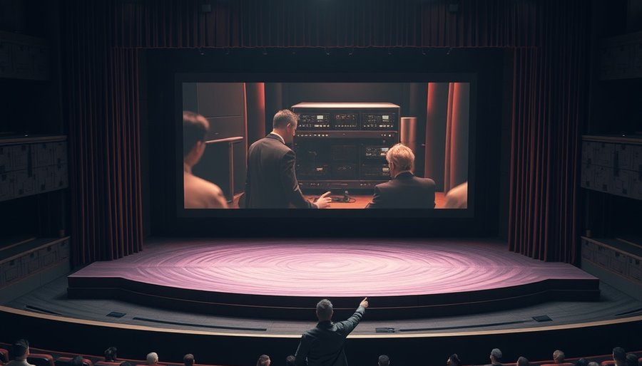
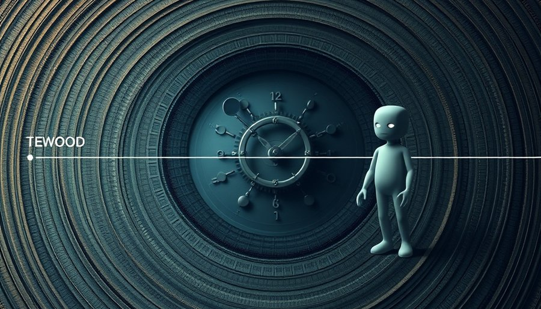

最常听到的解释是人群不同。真人短剧的主导者是演员、导演，他们来自文艺圈，老本行是写人。嫉妒、不甘、报复、以恶制恶，这些活人最真实的东西，写上去才带劲。一个窝囊女婿被丈母娘羞辱，最后亮出首富身份，把所有人的脸打回去。这种剧本，演员演起来有情绪，导演拍起来有张力，因为它的内核是人的报复欲。演员在镜头前咬牙切齿，观众在屏幕前热血沸腾，这种共谋的快感建立在真实的人身上。
AI短剧的幕后是另一群人：编剧、模型工程师、跑提示词的人。他们的训练材料不是戏，而是海量文本里的逻辑和因果。模型见过的几亿个故事里，善有善报恶有恶报是最稳定的模式。你让它生成一个爽剧，它默认输出的就是好人受难、坏人得意、最终反转、恶人受罚。这不是因为它有道德感，而是因为这套序列在训练数据里概率最高。工程师调试提示词时，发现要让模型写出坏人赢的结局，需要反复对抗模型的默认倾向，稍不留神模型就会自动把坏人写死。
人群不同，三观不同，这条线对，但只到一半。如果仅仅是人群不同，工程师完全可以通过提示词让AI写出歪三观。事实上，已经有人试过让AI写坏人最终获胜的剧本，模型也能写出来。但为什么在公开的AI短剧里，你几乎看不到这种结局？真正卡死三观的，是更硬的一层责任结构。

真人剧里那个歪三观，是有人为它背书的。演员敢接这个角色，因为这是表演。导演敢拍，因为这是艺术表达。就算被骂，也有一整套文艺话术和一个具体的人头可以扛。平台可以说这是某位导演的作品，观众可以骂这个演员演得太坏了。责任有一张人脸可贴。这张人脸的作用，不是挡骂，而是把道德风险从平台和系统身上转移到个人身上。平台可以一边下架争议内容，一边说我们尊重创作自由，因为锅有人背。
AI短剧没有这张脸。它的每一帧都是模型算出来的，没有一个具体的人为那句以恶制恶负责。一旦AI内容出了三观问题，找不到演员道歉，找不到导演解释这是反讽。责任会整个压在平台和模型身上，兜底的人不存在。想象一个场景：某AI短剧平台上线了一部剧，主角靠欺骗和暴力逆袭，最后逍遥法外。观众看得爽，但有人举报教坏小孩。平台找谁？找提示词工程师？他可以说我只是输入了提示词，模型自己生成的。找模型提供商？他们可以说这是用户生成内容，我们只提供工具。找审核团队？他们可以说AI生成的内容量太大，漏审了。最终，责任无处落地，但舆论和监管的矛头会直接对准平台本身。平台承担不起这种风险，所以最安全的做法就是从源头掐断：不让AI生成任何可能引发争议的道德越界内容。
这就像自动驾驶汽车出了事故，责任在车主、制造商还是算法？法律还没定，所以车企宁可让自动驾驶保守到笨拙，也不敢让它冒险。AI短剧的三观正是同一个逻辑：不是不想越界，是越界之后没人收场。

真人短剧那个歪的爽感，核心是具体的人被羞辱再翻盘。落差必须落在真脸和真人身上才有劲。你看着一张活生生的、窝囊到家的脸，最后他扬眉吐气，快感来自这个真人被命运补偿了。AI生成的假脸给不了这种真人被整的底层刺激。它再逼真你也知道那不是活人，快感天然打折。你看到一个AI生成的窝囊废被丈母娘扇耳光，你的愤怒不会像看到真人演员那样被点燃，因为你知道那只是一堆像素。没有真实的肉身，就没有真实的共情，也就没有真实的复仇快感。
于是AI短剧只能退回最原始、最普适的多巴胺机制：纯粹靠善有善报恶有恶报来凑那个爽。因为没有真实的、可羞辱可翻盘的肉身，它只能玩最高级也最保险的道德因果。假人的世界里没有真仇可报，所以只好人人行善。这也是为什么AI短剧的爽点常常落在坏人遭报应那一刻，而不是主角逆袭那一刻。因为坏人遭报应是一种抽象的正义满足，不需要你对坏人有切肤之恨，只需要你对秩序有朴素期待。
这种三观正有它的代价。AI短剧的善恶报应像一套干净的数学公式，没有真人剧里那种让人又恨又爽的灰色地带。主角的善良是模型算出来的最优解，不是从血肉里长出来的选择。内容更安全了，也更像模板了。这不是道德进步，是责任真空逼出来的四平八稳。当然，真人短剧也有三观正的作品，AI短剧也可能因为巧妙的提示词写出模糊地带。但当你连续刷上几十部，你会发现真人短剧的歪是常态，AI短剧的正是默认。这种差异不是偶然，是结构逼出来的。当创造者从有脸的换成没脸的，世界不会因此变得更善，只会因为没人敢负责而变得更规矩。
尾声
看到一个AI演的坏人，你骂谁？这个问题没有答案，所以AI干脆不演坏人。真人剧的歪三观有人脸认领，AI剧的三观正无人认领。差的不是善恶观，是敢不敢让坏人赢的那只手。
小汪老师的成长观察笔记